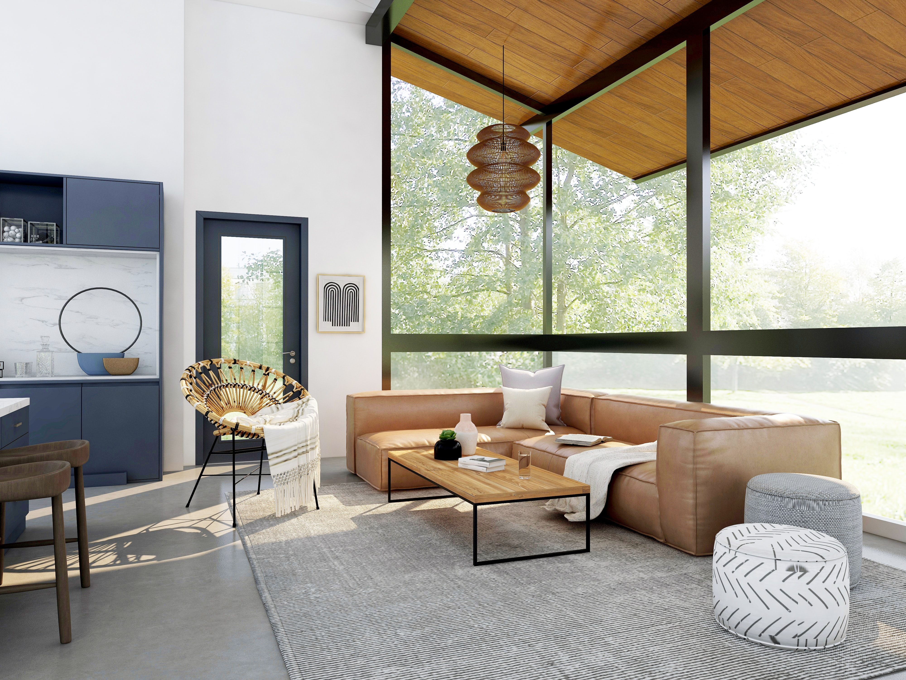
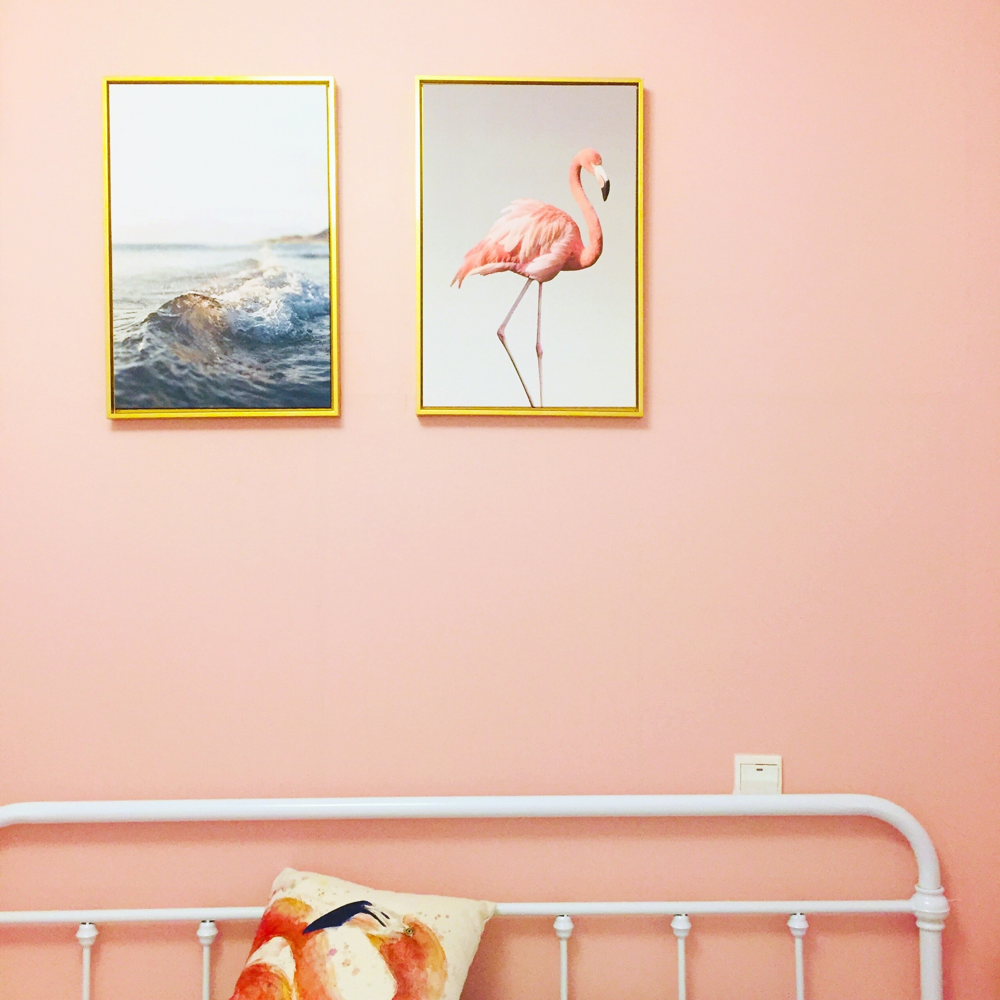

Natural Materials
The term ‘natural materials’ refers to those substances that are found in nature and which can either be used directly for some particular building function or require human intervention (e.g processing) to make them usable. The incorporation of materials like wood and stone are particularly effective at creating a restful home.
Artwork
Artwork can include prints or photographs hung on a wall, freestanding sculptural objects and so much more. As with textiles, artwork can also feature botanical elements. Hang a photograph of a landscape or a favorite flower or an ocean. Above the sofa in the living room, a large painting of a blue sky with wispy white clouds. It gives such a happy feeling to look at it, and it is a popular conversation piece when guests visit.
Get Crafty and Think Seasonally
The Artful Year leads you along a gently winding seasonal path with hidden nature treasures like how to make a glorious beanpole in spring, sand-cast candle holders in summer, leaf doodles in autumn and a nature ice wreath in winter.
Plants

In addition to purifying your air, indoor plants lend texture, shape, and color to a room. Not everyone is born with a green thumb, so fortunately there are plants to suit every kind of interior, lighting situation, and gardening ability. In this video there are top favorite, common & affordable houseplants!
Natural Light

Natural lighting, also known as daylighting, is a technique that efficiently brings natural light into your home using exterior glazing (windows, skylights, etc.), thereby reducing artificial lighting requirements and saving energy.
Fresh Flowers
Freshly picked flowers add a burst of color and beauty to any home. Depending on your skillset, patience, and time, there’s always a way to bring fresh flowers into your home.